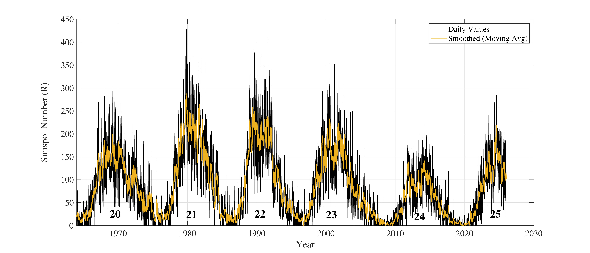

The Sun may appear to us as a steady source of light and heat, but its activity is far from constant. One of the most prominent manifestations of this variability is the solar cycle — a quasi-periodic variation in the Sun's magnetic activity that is most visibly expressed through changes in the number and distribution of sunspots.
The solar cycle spans approximately 11 years. During this period, solar activity gradually increases from a relatively quiet state, known as solar minimum, to a period of enhanced activity known as solar maximum, before declining again towards the next minimum (Hathaway, 2015).
This variability is not limited to sunspots. The solar cycle influences solar radiation output, the occurrence of solar flares and coronal mass ejections, and the structure of the heliospheric magnetic field. Consequently, it has a profound influence on space weather and the Earth's upper atmosphere.
The solar cycle is essentially the visible signature of the Sun's constantly evolving magnetic field.
From Solar Minimum to Solar Maximum
The solar cycle is commonly described in terms of two broad phases: solar minimum and solar maximum. These are not instantaneous events but represent different stages of the gradual evolution of solar activity.
Solar Minimum
A relatively quiet phase of the solar cycle, characterised by a smaller number of sunspots and generally lower levels of solar activity and high-energy radiation.
Solar Maximum
A period of enhanced solar activity, with increased sunspot numbers, stronger emissions in UV, EUV and X-ray wavelengths, and a greater occurrence of energetic solar events.
The transition between these phases is gradual, and the duration and strength of individual solar cycles can vary considerably. The solar cycle is therefore better described as quasi-periodic rather than as a perfectly repeating eleven-year clock.
How Were Solar Cycles Numbered?
Systematic numbering of solar cycles begins with Solar Cycle 1, which is designated as having started in 1755. However, observations of sunspots go back much further.
Telescopic observations of sunspots began in the early seventeenth century and are associated with pioneering observations by Galileo Galilei and his contemporaries. Regular and quantitative monitoring of solar activity, however, developed more systematically during the eighteenth century.
The development of a formalised cycle-numbering system was subsequently associated with Johann Rudolf Wolf in the nineteenth century. Wolf also developed an empirical measure of solar activity that became known as the Wolf Sunspot Number.
What Drives the Solar Cycle?
The fundamental driver of the solar cycle is believed to be the Sun's magnetohydrodynamic (MHD) dynamo. This process involves the generation and regeneration of magnetic fields within the solar interior through the interaction of differential rotation and convective flows.
The Sun does not rotate as a rigid body. Different regions rotate at different rates, producing differential rotation. In the tachocline — an interface region between the radiative and convective zones — strong shear motions can twist and amplify magnetic fields.
Eventually, concentrated magnetic flux can emerge through the photosphere. These regions appear as sunspots: relatively dark areas on the solar surface associated with strong magnetic fields.
The strong magnetic fields associated with active regions can also provide the energy reservoir for eruptive phenomena such as solar flares and coronal mass ejections.
Measuring Solar Activity: The Sunspot Number
One of the most widely used observational measures of solar activity is the Sunspot Number. It provides a convenient quantitative representation of the changing level of solar activity and forms one of the longest continuous records in solar physics.
The international sunspot number, historically known as the Wolf Sunspot Number, is expressed through the empirical relation
Here, Rs is the sunspot number, g′ is the number of sunspot groups, s is the total number of individual sunspots, and k′ is a correction factor that accounts for differences between observers, instruments and observing conditions (Wolf, 1861; Clette et al., 2014).
The factor of ten applied to the number of sunspot groups reflects the empirical observation that sunspots frequently occur in groups. The formulation therefore gives greater weight to the number of groups while still accounting for the total number of individual spots.

How Does Solar Activity Change During the Cycle?
During solar maximum, sunspot numbers reach relatively high values. This period is generally accompanied by enhanced emissions in the ultraviolet (UV), extreme ultraviolet (EUV) and X-ray regions of the electromagnetic spectrum.
The increased level of solar activity also means that energetic solar events such as flares and coronal mass ejections occur more frequently.
Solar minimum, in contrast, is characterised by a reduced number of sunspots, lower levels of high-energy solar radiation and a comparatively quieter heliospheric environment.
Importantly, however, solar activity does not simply repeat itself with identical strength every eleven years. Both the amplitude and duration of individual cycles can vary substantially.
The Solar Cycle Is Not Perfectly Periodic
Although the average cycle length is approximately eleven years, individual cycles can be shorter or longer. Their amplitudes can also differ significantly.
Long-term observations of sunspot activity have also revealed periods of unusually low or high solar activity. One of the most famous examples is the Maunder Minimum, approximately spanning 1645–1715, during which sunspot activity was exceptionally low.
Such long-term variations are important because changes in solar activity can influence the radiation environment of the Earth and consequently the behaviour of the upper atmosphere.
Why Does the Solar Cycle Matter to Earth?
The solar cycle is important to Earth because the changing level of solar activity modifies the environment through which the Earth moves.
During periods of enhanced solar activity, the occurrence of solar flares and CMEs tends to increase. Enhanced solar radiation also modifies the ionisation conditions of the Earth's upper atmosphere.
These changes can influence the ionosphere, radio-wave propagation, satellite communication, navigation systems and other components of the near-Earth technological environment.
Individual solar flares and CMEs are short-lived events, but the probability and overall frequency of such events changes as the Sun progresses through its approximately eleven-year cycle.
The Current Solar Cycle
We are currently in Solar Cycle 25, which officially began in December 2019. The beginning of the cycle was announced by NASA and NOAA in September 2020.
Solar Cycle 25 followed the relatively weak Solar Cycle 24. Observations indicate that Cycle 25 has exhibited stronger activity than its predecessor, making it an especially interesting cycle for studies of solar activity and its consequences for the near-Earth environment.
From the Solar Cycle to the Ionosphere
The solar cycle provides the long-term context within which many of the short-term solar-terrestrial phenomena occur.
At solar maximum, enhanced solar radiation and a greater frequency of flares and CMEs can produce stronger and more frequent disturbances in the ionosphere. At solar minimum, the ionising radiation environment is generally weaker and the Sun is comparatively quieter.
This long-term variability is particularly important when studying the ionosphere over many years. A change observed in ionospheric electron density may not necessarily represent a short-term event; it may also reflect the changing background level of solar activity.
In Summary
The solar cycle is an approximately eleven-year, quasi-periodic variation in solar magnetic activity. Sunspots provide one of the most visible and historically important indicators of this cycle.
Behind the changing sunspot number lies the complex magnetic dynamo operating inside the Sun. As the magnetic field evolves, the Sun's radiation output and its propensity for energetic eruptions also change.
For Earth, the solar cycle represents a changing space-weather environment. Understanding its behaviour is therefore essential for studying the ionosphere, solar-terrestrial interactions and the broader connection between our planet and its parent star.
References
Hathaway, D. H. (2015). The Solar Cycle. Living Reviews in Solar Physics.
Charbonneau, P. (2010). Dynamo models of the solar cycle.
Wolf, R. (1861). Historical development of the sunspot number.
Clette, F. et al. (2014). Revisiting the sunspot number.
Usoskin, I. G. (2007). The grand minima of solar activity: A review of the current understanding.